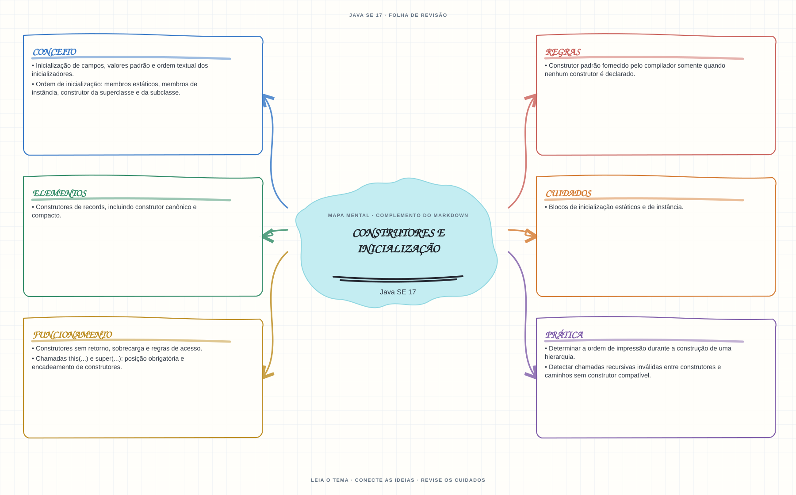

Ver mapa mental deste assuntoRastrear a ordem de inicialização e o encadeamento dos construtores de uma hierarquia.
Primeiro contato: aprenda o conceito e pratique antes de consultar os detalhes de prova. Voltar aos fundamentos se algum termo ainda for novo.
- Leia o objetivo e localize a ideia principal no conteúdo abaixo.
- Preveja o resultado, compile e execute o exemplo.
- Faça a atividade sem copiar a solução e confira a checagem comentada.
EXEMPLO DE CONSOLE
Veja a regra em execução
Antes de executar, anote sua previsão. Compile o exemplo com o JDK e compare a saída observada com as regras deste assunto.
Comandos para compilar e executar
javac -d target/bin src/03-poo/construtores-e-inicializacao/ConstrutoresEInicializacaoExample.java
java -cp target/bin ConstrutoresEInicializacaoExampleA execução imprime o resultado no console para você comparar com sua previsão.
Consultar código-fonte: ConstrutoresEInicializacaoExample.java
public class ConstrutoresEInicializacaoExample {
private static class Pessoa {
private static int quantidadeCriada;
private final String nome;
private final int numero;
Pessoa() {
this("Estudante");
}
Pessoa(String nome) {
this.nome = nome;
this.numero = ++quantidadeCriada;
}
}
public static void main(String[] args) {
System.out.println("=== Construtores e inicializacao ===");
System.out.println("O construtor sem argumentos delega para Pessoa(String) usando this(...).");
Pessoa pessoaPadrao = new Pessoa();
Pessoa pessoaNomeada = new Pessoa("Maria");
System.out.println("Construtor padrao: nome=" + pessoaPadrao.nome + ", numero=" + pessoaPadrao.numero);
System.out.println("Construtor com argumento: nome=" + pessoaNomeada.nome
+ ", numero=" + pessoaNomeada.numero);
System.out.println("Campo static compartilhado: " + Pessoa.quantidadeCriada + " objetos criados.");
}
}
PRATIQUE AGORA
Faça uma pequena alteração por conta própria
Adicione à classe Tarefa um construtor que receba a descrição e imprima a ordem em que campos e construtor são executados.
Concluído quando: o programa compilar, produzir o resultado esperado e você conseguir explicar a regra aplicada.
CHECAGEM RÁPIDA · Construtores e inicialização
O compilador sempre fornece um construtor sem argumentos?
Conferir resposta comentada
Não. O construtor padrão só é fornecido quando a classe não declara nenhum construtor.
Estude
- Construtor padrão fornecido pelo compilador somente quando nenhum construtor é declarado.
- Construtores sem retorno, sobrecarga e regras de acesso.
- Chamadas
this(...)esuper(...): posição obrigatória e encadeamento de construtores. - Ordem de inicialização: membros estáticos, membros de instância, construtor da superclasse e da subclasse.
- Blocos de inicialização estáticos e de instância.
- Construtores de records, incluindo construtor canônico e compacto.
- Inicialização de campos, valores padrão e ordem textual dos inicializadores.
Verifique se consegue
- Determinar a ordem de impressão durante a construção de uma hierarquia.
- Detectar chamadas recursivas inválidas entre construtores e caminhos sem construtor compatível.
Como este capítulo se relaciona com cada exame
POO básica é reaproveitável; records e sealed não existem em Java 8.
Base de estudo deste portal; confirme o mapeamento com o blueprint vigente.
Conceitos úteis; revise recursos de linguagem e regras de Java 21.
Orientação editorial sobre reaproveitamento do material; não representa objetivos oficiais nem garante cobertura do exame. Consulte o comparativo e as fontes da Oracle.